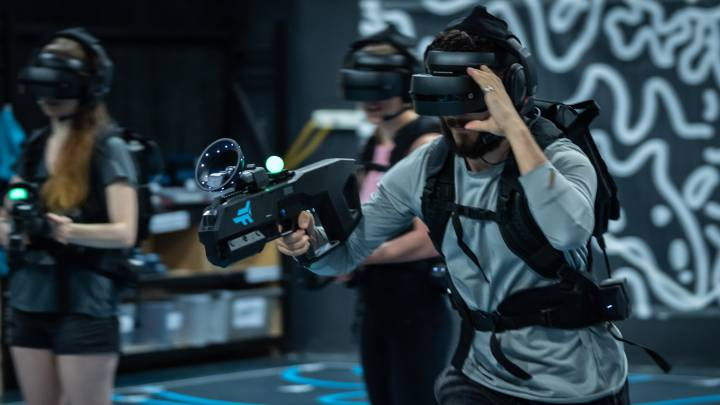

La tecnología de realidad virtual o RV, es un campo en desarrollo que ofrece una experiencia inmersiva y multisensorial al usuario, transportándolo a entornos simulados generados por computadora. A través del uso de dispositivos como gafas de realidad virtual, los usuarios pueden sumergirse en mundos virtuales tridimensionales e interactuar con ellos en tiempo real.
La RV se utiliza en una amplia gama de aplicaciones, que van más allá del entretenimiento. En el ámbito de la educación, por ejemplo, se ha utilizado para crear simulaciones interactivas que permiten a los estudiantes explorar conceptos complejos de manera práctica y visualmente impactante. En el campo de la medicina, la realidad virtual se utiliza para entrenar a profesionales de la salud en cirugías o procedimientos complejos, permitiendo la práctica en un entorno virtual antes de realizar intervenciones reales.
La realidad virtual también ha encontrado aplicaciones en la industria de los videojuegos, donde ha revolucionado la forma en que los jugadores interactúan con los mundos virtuales. Los entornos de juego en RV proporcionan una inmersión sin precedentes, permitiendo a los jugadores explorar entornos virtuales de manera dinámica y participar en experiencias interactivas más realistas.
